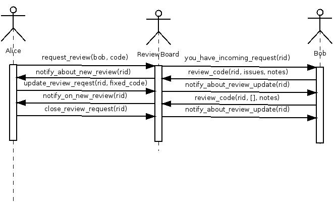

Best practices: code review
Improving quality of your code and quality of your team
“Code review is like a pair of pants. If you work at home, pants are optional. But if you are in public, you’d better make sure you have pants on, even if no one looks at you. ”
About me and code review
- ~4 years of experience working in different code review enabled teams
- Teams of different sizes - from 3 people start-up to 200 people gamedev company
- Different approaches:
- Pre-commit review at co-workers computer
- Post-commit review at review-board
- Merge-requests with GitLab
- Mandatory and optional review requests
- Enforced by Jira work-flow
- Enforced by feature-branches work-flow
- Enforced by commit message
- Positive and negative experience
Mine positive expirience
- Very quick start after joining to the team
- Quickly pick up how to write good python
- Make me better programmer overall
Mine negative expirience
- Delay of features delivery
- Propagation of bad practices
- Ignore
What is code review
- Better developers
- Propagation of best coding practices
- Propagation of code base knowledge - increase bus factor
- Readable/Supportable code enforcement
- Crap detector
- Obvious bugs got caught
- Increased responsibility for commiter
- Team building tool
You will became better developers with code review
Because now you get feedback on your code quality and you see what you need to improve.
All professional athletes use trainer person. Why don't you?
What code review is not
- Testing replacement - reviewer is not responsible for the code
- Alpha male domination tool - please don't humiliate other developers
- Thing to start conflicts - if it's controversy then compromise or use a third person
- Thing to spend much working time in - just scratch the surface
Code-review process core principles
- Keep it friendly for humans
- Create the value by your review
- Distinguish between notes and issues
- everybody is responsible = nobody is responsible
Improving quality of the team
- People tend to became as good as the best of them
- Knowledge sharing
- Leading by example
- People are aware of what's going on
- People learn from their mistakes
- People learn from success stories
Improving quality of the code
“ given enough eyeballs, all bugs are shallow ”
Improving quality of the code. Tasks
- Ensure readability. Developing common style
- Fixing obvious bugs
- Detecting half done code
- no unit-tests
- no documentation
- unacceptable shortcuts
Improving quality of the code. Examples
// somewhere in the function
#define FINDTHINGS1(t1) (things.find(t1) != things.end())
#define FINDTHINGS2(t1,t2) ((things.find(t1) != things.end()) \
|| (things.find(t2) != things.end()))
if((FINDTHINGS2("apple", "apples") && fruid->isApple()) ||
(FINDTHINGS2("banana", "bananas") && fruit->isBanana()) ||
(FINDTHINGS2("orange", "oranges") && fruit->isOrange()) ||
// .....
#undef FINDTHINGS1
#undef FINDTHINGS2
// somewhere in the function
auto findthings = [&](const auto &t1, const auto &t2) {
return things.find(t1) != things.end() || (things.find(t2) != things.end());
};
if ((findthings("apple", "apples") && fruit->isApple()) ||
(findthings("banana", "bananas") && fruit->isBanana()) ||
// ...
changed = writeSomething(templateFile, filepath + ".some_ext", replace) || changed;
changed |= writeSomething(templateFile, filepath + ".some_ext", replace);
// inside very long one function
HIST_ENTRY **history_list = get_history_list();
if(history_list) {
size_t changed_count = 0;
for(size_t i = 0; history_list[i]; ++i) {
if(history_list[i]->timestamp) continue;
free_history_entry(replace_history_entry(i, history_list[i]->line, NULL));
++changed_count;
}
if(changed_count > 0) write_history(historyfile.c_str());
}
// inside very long one function
convertHistory();
::history_comment_char = 0x02;
enum {MAGIC_BINARY_CHAR = 0x02}; // must be outside the history's
// commands allowed symbols
::history_comment_char = MAGIC_BINARY_CHAR;
month =
qi::lit("january")[qi::_val = Month::January]
| qi::lit("february")[qi::_val = Month::February]
| qi::lit("march")[qi::_val = Month::March]
| qi::lit("april")[qi::_val = Month::April]
| qi::lit("may")[qi::_val = Month::May]
| qi::lit("june")[qi::_val = Month::June]
| qi::lit("july")[qi::_val = Month::July]
| qi::lit("august")[qi::_val = Month::August]
| qi::lit("september")[qi::_val = Month::September]
| qi::lit("October")[qi::_val = Month::October]
| qi::lit("November")[qi::_val = Month::November]
| qi::lit("December")[qi::_val = Month::December];
month =
qi::lit("january")[qi::_val = Month::January]
| qi::lit("february")[qi::_val = Month::February]
| qi::lit("march")[qi::_val = Month::March]
| qi::lit("april")[qi::_val = Month::April]
| qi::lit("may")[qi::_val = Month::May]
| qi::lit("june")[qi::_val = Month::June]
| qi::lit("july")[qi::_val = Month::July]
| qi::lit("august")[qi::_val = Month::August]
| qi::lit("september")[qi::_val = Month::September]
| qi::lit("october")[qi::_val = Month::October]
| qi::lit("november")[qi::_val = Month::November]
| qi::lit("december")[qi::_val = Month::December];
Code review integration example
- Reviewboard is used
- nice web-interface
- command line tool for posting and updating reviews
- e-mail notifications
- svn/git/mercurial integration
- Post-commit optional review
- Only one reviewer is assigned
Code review with ReviewBoard

Live demo
- Create review request
- Comment on review request
- Reply to comment
- Close review request
Setting up rbtools
sudo pip install rbtools
cd ~/projects/cmdaemon
rbt setup-repo
rbtools example session
rbt post --summary="changing foo" --description="changing foo to change foo" \
--target-people="yuriy" 26892
rbt post -u -r 447 26893
FAQ
- I want precommit hook!
- No, you don't. Because updating such review requests will be hell. Have some respect for reviewer
- It consumes too much time!
- At the long run it saves a way more time that it consumes
- I am too good for this. My code is ideal!
- No, you are just human. Even best software developers do a stupid mistakes
- Reviewer/Commiter is an idiot!
- You are working in a team. Please learn how to handle critics in a proper way. Learn reviewer/commiter expectations and cooperate in a professional way
- Reviewer can't undestand my perfect code - he is dumb as fuck!
- Reviewer most likely will need to support your code some day. Please fix code to be readable